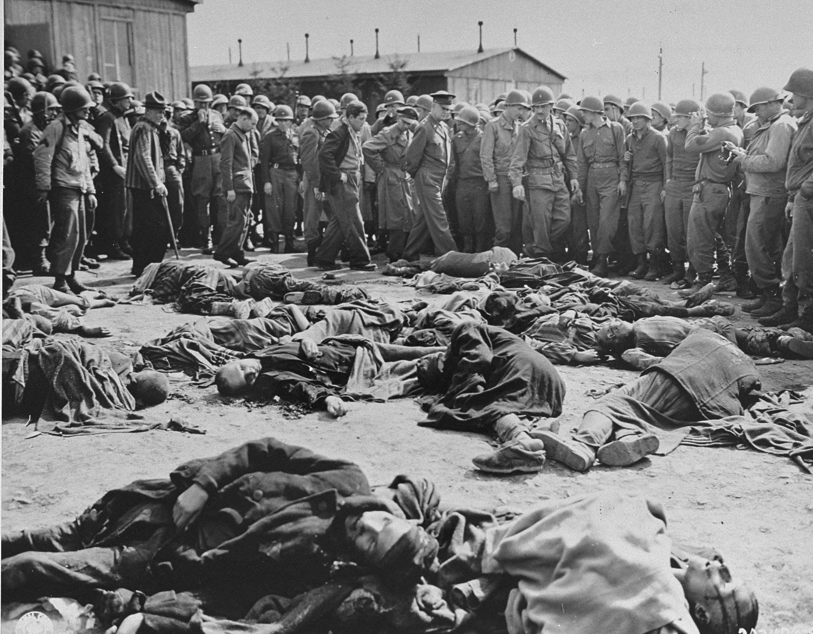

Directions: Fill in the chart as we study each stage of the record. Keep this page in your notebook. You will use it again on the review day before the unit test.

| Stage | What the record shows | What was known | What was done |
|---|---|---|---|
| Persecution in law, 1933 to 1939 | |||
| Refusal, 1938 to 1939 | |||
| Ghettos and the shooting squads, 1939 to 1942 | |||
| The Final Solution, 1942 to 1945 | |||
| Liberation and judgment, 1945 to 1946 |
The record in one sentence. Finish this sentence in your own words, using at least two rows of the chart as evidence. The distance between knowledge and response in this record is shown by...
| Stage | What the record shows | What was known | What was done |
|---|---|---|---|
| Persecution in law, 1933 to 1939 | The Nuremberg Laws of 1935 stripped Jews of citizenship and forbade intermarriage. On Kristallnacht in November 1938, synagogues were burned, shops smashed, and about thirty thousand Jewish men arrested. | The persecution was public law and public violence, reported around the world. | The German state carried the persecution out through law. Abroad, most governments expressed sympathy and admitted few refugees. |
| Refusal, 1938 to 1939 | At Evian in 1938 nation after nation declined to admit more refugees. In 1939 the St. Louis, with 937 Jewish passengers, was turned away by Cuba, the United States, and Canada, and returned to Europe. | The passengers' danger was known in kind. The persecution and Kristallnacht were public record. | Quotas stayed fixed and the ship was refused. Later research established that about a quarter of its passengers were murdered. |
| Ghettos and the shooting squads, 1939 to 1942 | Jews in occupied Poland were confined in ghettos under crowded and starved conditions. The Einsatzgruppen shooting units murdered more than one million people, including nearly thirty-four thousand at Babi Yar in two days. | Reports reached London and Washington by August 1942, and the Allied governments condemned the extermination in December 1942. | Condemnation was issued. No rescue agency existed, and the murders continued at full scale. |
| The Final Solution, 1942 to 1945 | Jews from across Europe were deported by train to killing centers in occupied Poland and murdered in gas chambers. The record supports six million Jews murdered, alongside millions of others. | By 1944, escaped prisoners and Polish couriers had confirmed the killing centers in the Allied capitals. | The War Refugee Board was created in January 1944 and worked in the last year of the war, including support for Wallenberg in Budapest, where thousands were saved. |
| Liberation and judgment, 1945 to 1946 | Allied armies overran the camps in the spring of 1945. At Nuremberg the surviving leaders of Nazi Germany were tried for war crimes on the evidence, and twelve were sentenced to death. | Eisenhower ordered Ohrdruf documented and witnessed, so that first-hand evidence would exist against a future charge of propaganda. | The victors submitted their prisoners to a trial. Jackson opened the prosecution by promising proof from the Germans' own records, photographs, and films. |
The record in one sentence. Strong answers join a knowledge fact to a response fact from two different rows. The persecution was public law from 1935 and the extermination was condemned by name in December 1942, while the quotas stayed fixed in 1939 and a rescue agency arrived only in January 1944, in the war's last year.